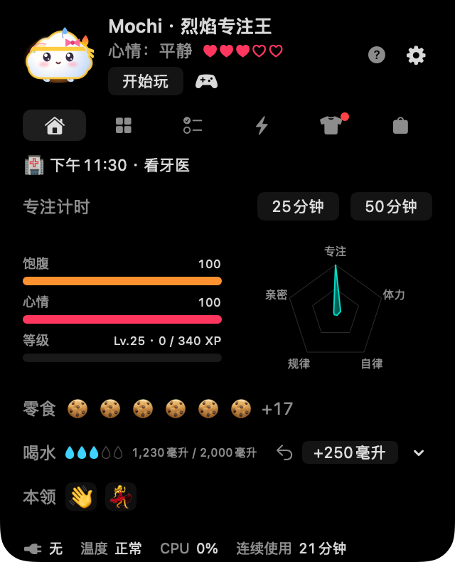
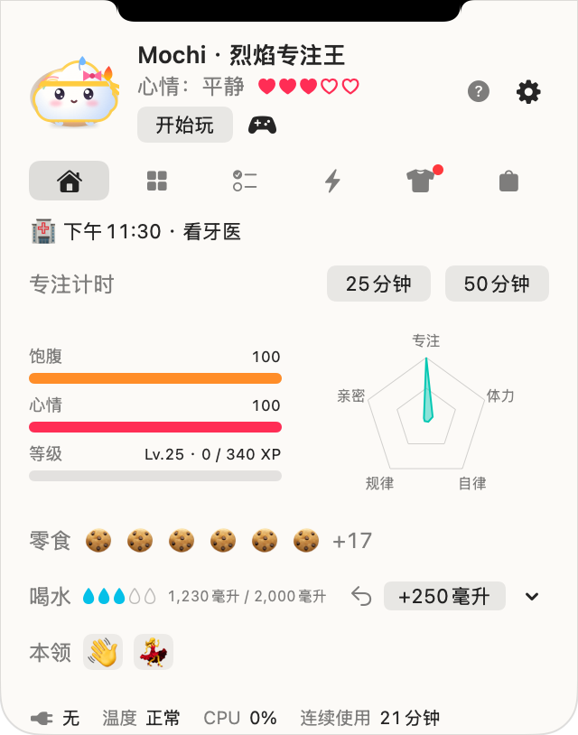
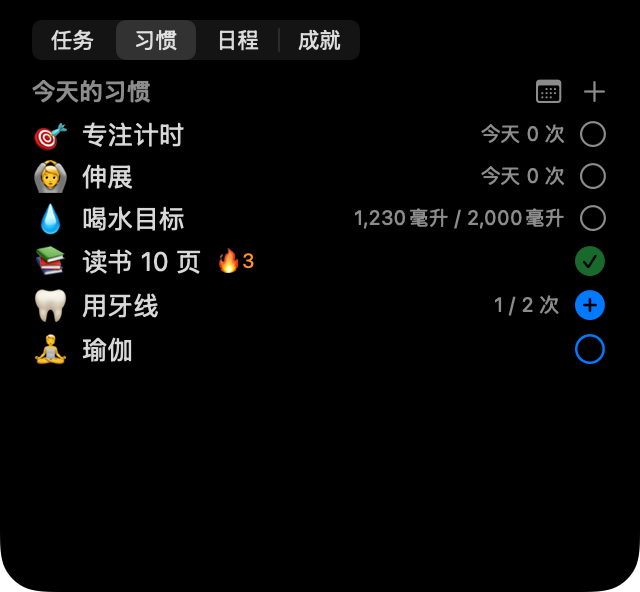

咚咚，我是诺奇！
一只住在 MacBook 刘海旁的软软小伙伴。你工作时，它会温柔地提醒你喝水、伸展、好好休息，还有今天的安排。你越照顾自己，它就从蛋里孵出，陪你一起长大。


五位伙伴，全部免费
☁️ 绵绵
云朵宝宝心情就是天气：饿了会下小雨，完成今天的喝水目标就放晴。
🧶 绒绒
毛绒球充电时肚子贴地趴着，指针靠近时耳朵会竖起来。
🍮 弹弹
布丁Mac 发热时会滴着焦糖融化，充电时开心地晃来晃去。
🌱 豆豆
发芽的豆子完成今天的喝水目标会闪闪发光，困了叶子会耷拉下来。
🌙 棉兔
月兔棉花糖晚上 9 点以后，额头上的弯月会发光。
季节伙伴
Noki Plus 会员每个季节都能遇见一位限定伙伴，季节过去、Plus 结束后也会一直陪着你：秋天是银杏宝（银杏麻糬）和枫叶宝（枫叶），冬天是雪团宝（毛茸茸的雪球）和包子宝（围着围巾的包子）。


和你的 Mac 一起呼吸
诺奇会对电量、充电、发热、键盘和鼠标活动以及屏幕休眠做出反应，这些都只在你的 Mac 上读取。它的脸能表现 13 种心情，开启天气后还会根据外面的天气撑伞或围上围巾。
照顾你的一天
💧 喝水与伸展
一键记录一杯水，可以保存自己的杯子，也能补记离开 Mac 时喝的水。久坐时温柔提醒你伸展，还有 25 或 50 分钟的专注计时。
🌱 习惯与日程
按次数或时长设定自己的习惯，一个月的习惯日历，带提醒的日程，以及（连接后的）Mac 日历。
🏆 任务与成就
每天三个任务、35 个成就以及每周和每月挑战，奖励零食可以买衣服。
🎾 一起玩
摸摸它、在屏幕上给它扔球、玩三个小游戏，或者和朋友交换代码来对战。



轻巧，而且只在你的 Mac 上
呼吸动画不会重绘画面，所以平时 CPU 占用接近 0%，屏幕休眠时诺奇也会休息。宠物和记录只保存在你的 Mac 上：没有账号，也没有服务器。详见隐私政策。
即将推出
麻糬诺奇正在和朋友们一起打磨。上架 Mac App Store 后，我们会在这里和更新动态中通知你。
- 搭载 Apple 芯片的 Mac（M1 或更新），macOS 14 Sonoma 或更高版本
- 没有刘海的 Mac 或外接显示器上，屏幕顶部中央会出现虚拟刘海。也可以改为菜单栏图标。
- 五位伙伴和核心功能全部免费。Noki Plus（可选）提供无限习惯、诺奇每月的信和季节伙伴。

和诺奇一起过一天，
告诉我们你最喜欢哪位伙伴 💌
所有图片都由应用实际的绘图代码画出。